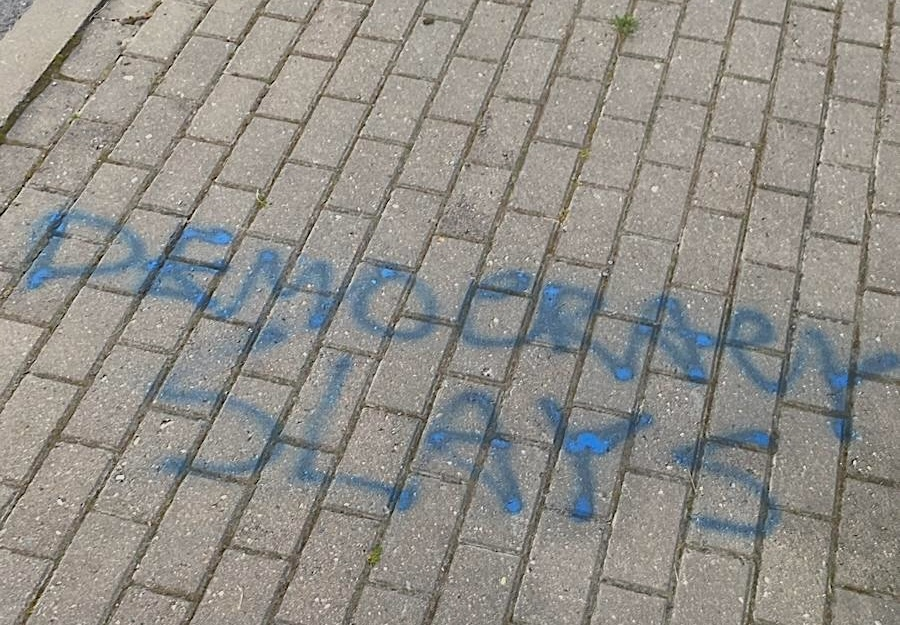
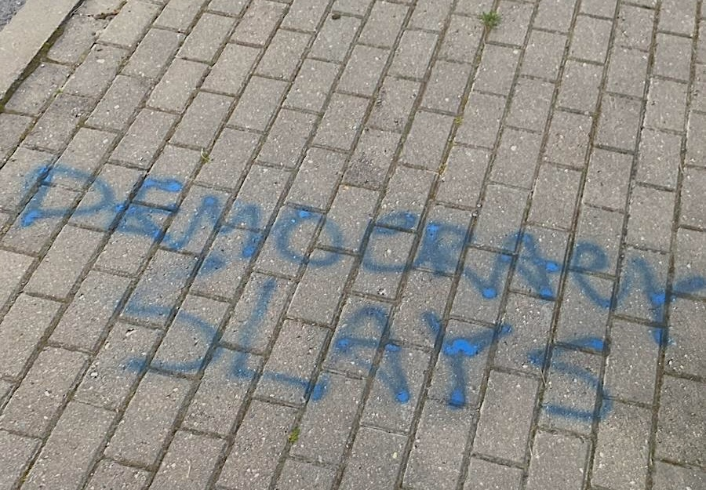

Teaching
I view teaching and mentoring as ongoing conversations that occur both in and outside the classroom. In class, I teach students about political theory, discrimination, statistical reasoning, and research design, helping them think critically about the many truth claims they'll encounter in politics and in life. Outside of class, I try to be the kind of mentor I would have wanted to have—approachable, encouraging, and emotionally supportive.
My commitment to teaching has deep roots. I've taught English as a Foreign Language in Minsk, Belarus for more than two years, worked as an ACT and SAT tutor for nine months, served as a teaching assistant in a second-grade classroom for an academic year, and contributed to education policy initiatives at the Colorado Department of Education. During my Master of Public Policy and Administration at Northwestern, I was a teaching assistant for The Global City, a graduate course in the MPPA program, for three semesters (full TA record). These experiences—spanning different age groups, languages, and cultural contexts—fundamentally shaped my belief that effective teaching means meeting students where they are.
Teaching at Monash University
At Monash University, I teach courses that bridge political theory with contemporary issues of discrimination and inequality—topics at the heart of my research program.
Political Theory in a Changing World: Concepts, Issues and Debates
In Semester 1, I'll co-teach Political Theory in a Changing World: Concepts, Issues and Debates, a foundational course that introduces students to core concepts in political science and their application to contemporary challenges. The course emphasizes the practical application of theoretical concepts to real-world problems, examining how political ideas evolve in response to changing social, economic, and technological contexts, with particular attention to questions of justice, equality, democracy, and power in the 21st century.
Politics of Discrimination
Starting in Semester 2, I'll teach a new course on the politics of discrimination. This course will draw directly on my research examining how discrimination operates across different identity categories—including race, ethnicity, class, disability, and nationality—and across varied institutional contexts. Students will engage with both theoretical frameworks for understanding discrimination and empirical evidence from field and survey experiments conducted around the world.
Methods teaching across institutions
My approach to teaching methods evolved significantly through five years at Dartmouth College (2020-2025), where I taught introductory statistics, experimental methods, co-directed the Honors Program, and co-directed a foreign studies program (full Dartmouth record). In courses like Quantitative Political Analysis and Experiments in Politics, I saw firsthand how computational tools could help students engage with research design in more hands-on, intuitive ways. That experience motivated me to explore how artificial intelligence and large language models could further transform methods instruction.
I now regularly teach methods courses at leading summer programs and professional development institutes worldwide. These courses focus on helping researchers use artificial intelligence and computational tools to design better research, conduct experiments, and analyze complex social phenomena.
AI-enhanced research and experimental design
 With my AI and Experimental Methods students at IPSA-NUS 2025
With my AI and Experimental Methods students at IPSA-NUS 2025
I've taught AI and experimental methods courses at several leading summer programs and professional development institutes:
- AI-Enhanced Research Design — Essex Summer School in Social Science Data Analysis (2026)
- Geospatial Data and Spatial Analysis — Essex Summer School in Social Science Data Analysis (2026)
- AI and Experimental Methods — IPSA-NUS Summer School for Social Science Research Methods (2025)
- AI and Research Methods — IPSA-NUS Summer School for Social Science Research Methods (2025)
- Using AI to Build Better Experiments — Statistical Horizons (2026)
- AI-Enhanced Experiments — Instats (2025)
These courses teach researchers how to leverage large language models and computational tools to generate experimental materials, validate treatments, deploy AI-powered experiments, conduct automated text analysis, and communicate results more effectively. Throughout, I emphasize hands-on application, with participants working through real research challenges using state-of-the-art AI tools.
In addition to these formal courses, I've taught multiple workshops on experiments and text analysis for graduate students at Waseda University and co-taught two J-term classes on Computational Text Analysis for Legal Practice at the University of Virginia School of Law with Kevin Cope. These courses received strong evaluations, with an average overall score of 4.97/5.
I've also taught numerous short methods workshops at universities in the United States, Europe, and Asia. Post-workshop surveys consistently show strong satisfaction, with 80% of attendees rating them more helpful than similar workshops.
Baltic LEAP Foreign Study Program
One of my most rewarding teaching experiences was co-founding and co-directing Baltic LEAP (Language, Energy, and Politics), a quarter-length foreign study program through Lithuania, Latvia, and Estonia. In line with my belief that intergroup contact can reduce negative biases, I strongly advocate for students pursuing intercultural experiences.

 

The program took students through the three Baltic countries, spending about four weeks in Vilnius, two weeks in Riga, and another four weeks in Tartu, with day and weekend trips to Jūrmala, Kaunas, Klaipėda, Daugavpils, Narva, Sillamäe, and Tallinn. Students completed a full course load while participating in extensive field trips and excursions (📷 photos from our trips). The Guarini Institute of International Education lauded this program as "innovative" and "cutting edge."
As part of this program, I taught Baltic Politics, a course that explored the region through topics related to democracy and discrimination, focusing on real-world conflicts between representation and inclusion. The course incorporated local voices and featured guest lectures from academics, diplomatic staff (including ambassadors), journalists, and policy professionals. It was one of only two classes on the politics of the Baltics offered by universities in the United States.
Students have called the program "truly life-changing," "by far the most unique experience you will have," and "honestly … one of the best experiences of my life." In a survey conducted three months after the inaugural program, students indicated their participation (1) influenced their understanding of their own cultural identity and biases, (2) made them take a more global view of things, and (3) helped them better connect with different types of people.
Complete teaching records
Course Evaluations
Comprehensive evaluation scores from Dartmouth, University of Virginia Law School, and Northwestern in standardized table format, showing consistent strength in course quality and teaching effectiveness.
Dartmouth College (2020-2025)
Complete archive of my five years at Dartmouth, including courses in statistical reasoning, experimental methods, and Baltic politics, plus co-direction of the Honors Program. Includes detailed evaluations, student testimonials, and a collected student song playlist.
Northwestern University (2012-2013)
Teaching assistant experience in Northwestern's Master of Public Policy and Administration program, where I worked with mid-career professionals on urban development and global economic systems over three semesters. Recorded here because all college teaching has to start somewhere.
Scholarship of teaching and learning
I engage in systematic research on pedagogical practices, publishing teaching notes in APSA's PS: Political Science & Politics (1, 2) with undergraduate co-authors and developing a series of papers on reflexivity and educational technologies in teaching.